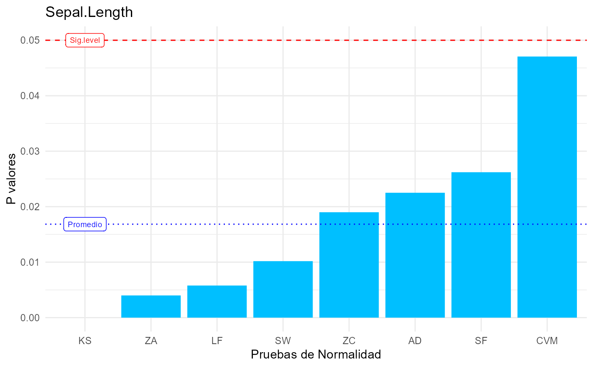
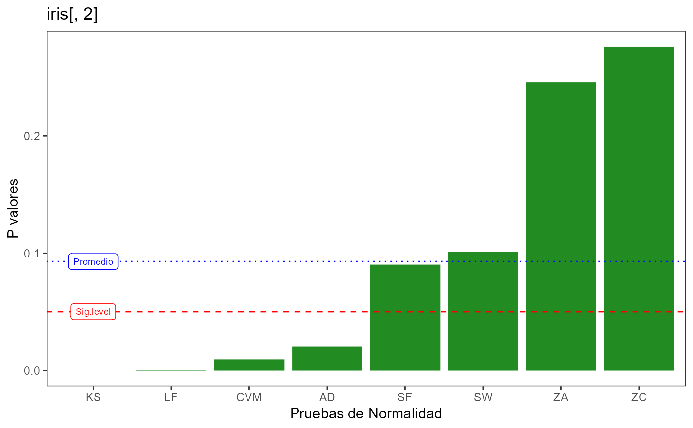

Genera de manera rápida un gráfico comparativo con p-valor obtenido de diversas pruebas de normalidad, partir de un vector de datos numéricos
NormTests(vector, significancia = 0.05, color = "deepskyblue1")vector de elementos numéricos del cual se analizará su normalidad
nivel de significancia para visualizar en el gráfico final. Valor por defecto: 0.05
color de las barras del gráfico
gráfico de ggplot2 mostrando los p-valores y el promedio de p-valores (línea) para identificar la congruencia de las pruebas de normalidad. Los p-valores se muestras numéricamente en la consola
El gráfico final es generado con ggplot2, por lo que puede ser editado con cualquier función de dicho paquete. La línea de guiones roja define el nivel de significancia de 0.05
library(ggplot2)
data("iris")
# Resultado de las pruebas de normalidad
NormTests(iris$Sepal.Length)
#> Warning: ties should not be present for the Kolmogorov-Smirnov test
#> SW KS LF AD SF CVM
#> 0.010181161 0.000000000 0.005788395 0.022510515 0.026210801 0.047064590
#> ZC ZA
#> 0.019000000 0.004000000

# Con modificaciones de ggplot2
NormTests(iris[,2], color = "forestgreen") +
labs(titule = "Título genial") +
theme_test()
#> Warning: ties should not be present for the Kolmogorov-Smirnov test
#> SW KS LF AD SF CVM
#> 0.1011542684 0.0000000000 0.0003142147 0.0202265136 0.0902023986 0.0093356205
#> ZC ZA
#> 0.2760000000 0.2460000000
